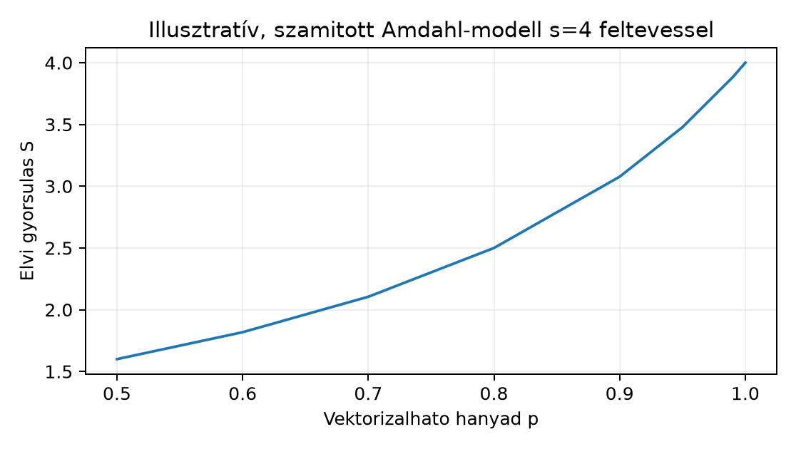

A záróprojekt első lépése nem a kódírás, hanem a feladat rögzítése. Ez nem bürokrácia: a teljesítménykritikus assembly modulnál a specifikáció az a pont, ahol a szándék és a mérhető követelmény szétválik a megvalósítástól. Ha a feladat, az interfész és az elfogadási feltétel nincs rögzítve az első sor assembly megírása előtt, akkor később nem lehet eldönteni, hogy a modul jó-e. A „gyorsnak tűnik” nem elfogadási kritérium; a „medián idő ≤ a referencia medián idejének fele esetén, és minden korrektségi teszt zöld” már az.
Ez az alfejezet a biztonsági interop-szerződés fogalmait ülteti át egy konkrét projekt tervébe. Az ott bevezetett három dimenzió – értékhatomány, pointer-érvényesség, tulajdonjog és hibajelzési konvenció – itt kap konkrét értékeket. A NEON-mérési módszertan adja a statisztikai keretet, a fordítói optimalizálási tapasztalat pedig figyelmeztet arra, hogy a baseline nem lehet „szándékosan lassú C”: a referencia ugyanolyan fordítói kapcsolókkal kell fusson, mint amilyeneket egy valódi projekt használna.
A fejezet célja nem az, hogy egy konkrét modult implementáljunk – az a megvalósítás alfejezet feladata –, hanem hogy olyan specifikációs dokumentumot állítsunk össze, amelyből egy másik fejlesztő (vagy a kurzus auditálója) egyértelműen meg tudja ítélni a kész modult. A specifikáció önmagában is tesztelhető: ha a korrektségi terv nem fedi le a határeseteket, az a specifikáció hibája, nem az implementációé.
Projekt-specifikáció (project specification): olyan rögzített dokumentum, amely egy szoftvermodul feladatát, külső interfészét, korrektségi követelményeit, teljesítmény-követelményeit és biztonsági szerződését írja le annyira pontosan, hogy a modul implementációjától függetlenül eldönthető legyen annak elfogadása vagy elutasítása.
A specifikációnak öt része van ebben a projektben:
A scope-ból kizárt: a C alapszintaxis újratanítása, a konkrét assembly utasítássor megírása (az a058), a mérés tényleges végrehajtása (az a059), valamint az auditmódszer részletes kidolgozása (az a060). Ez az alfejezet a terv, nem a végrehajtás.
Három jelölt merül fel a könyv korábbi fejezetei alapján. Mindegyik szerepelt már valamilyen formában, és mindegyik rendelkezik az assembly-optimalizáláshoz szükséges tulajdonságokkal – de nem egyformán.
1. jelölt: CRC32 bitek fölött. A bitmanipulációs fejezet mintái közvetlenül
alkalmazhatók: táblás megoldás, táblamentes (bitenkénti) megoldás,
illetve az ARMv8.1 CRC extension utasításai. Erőssége, hogy az interfész
triviális
(uint32_t crc32(const uint8_t *data, size_t len)), és a
korrekció bitre pontosan ellenőrizhető. Gyengesége, hogy a bázis A64
ISA-ban nincs dedikált CRC-utasítás (az az ARMv8.1 opcionális
kiterjesztése), ezért a kézi optimalizálás gyorsulása behatárolt; a
táblás változat memóriafüggő, a táblamentes változat pedig jól
vektorizálható ugyan, de a gyorsulás mértéke erősen függ a bemenet
hosszától.
2. jelölt: memcpy-szerű másolás. Az interfész
szintén egyszerű
(void lab_memcpy(void *dst, const void *src, size_t n)), és
a NEON vektorizáció természetes. Problémája, hogy nagy
esetén a memóriasávszélesség a szűk keresztmetszet, nem a számítási
kapacitás; az Amdahl-korlát itt nem a nem
vektorizálható hányadból, hanem a memóriából ered. Kis és közepes
méreteknél viszont látványos a gyorsulás, és a cache-viselkedés (cache-hierarchia) jól demonstrálható.
3. jelölt: sávos (blokkolt) mátrixszorzás. A
feladat:
,
ahol
,
,
mind
-es,
sor-fő (row-major) elrendezésű float tömbök. A számítási
igény
,
a memóriaigény
– vagyis nagy
-nél
a számítás dominál, és a memóriasávszélesség nem feltétlenül szűk
keresztmetszet. A NEON vektorizáció mindhárom ciklusban alkalmazható, a
blokkolás (cache-tudatos kód) pedig a
cache-találati arányt javítja. A teljesítmény iparági standard
metrikával, GFLOP/s-ban mérhető. A referenciaimplementáció (naiv három
egymásba ágyazott ciklus) triviálisan megírható, és a lebegőpontos
összehasonlítás módszertana is tanítható rajta.
A választás a 3. jelölt: sávos mátrixszorzás. Indoklás táblázatban:
| Szempont | CRC32 | memcpy | sávos mátrixszorzás |
|---|---|---|---|
| Számítási dominancia | közepes | alacsony (memóriakötött) | magas () |
| NEON-vektorizálhatóság | részleges | magas | magas (mindhárom ciklus) |
| Cache-tudatosság szerepe | alacsony | magas | magas (blokkolás) |
| Referenciaimplementáció egyszerűsége | magas | magas | magas |
| Iparági mérőszám | átviteli sebesség | sávszélesség | GFLOP/s |
| Gyorsulás a modell szerint | korlátozott | memóriakötött | Amdahl-modell feltevéssel: legfeljebb 4× (modellérték, nem hardvergarancia) |
| Korrektség ellenőrzése | bitre pontos | bitre pontos | toleranciás |
A mátrixszorzás választását az is indokolja, hogy a vektorizálható hányad fogalma itt kézzelfogható: a belső szorzat-összegzés szinte teljesen vektorizálható, a maradék (setup, ciklusvezérlés, blokkhatárok) pedig mérhetően elválik a vektorizált magtól.
Munkakönyvtár: ~/arm-labor/a64/zaro1/ —
az alfejezet minden laborfájlja ide kerül, és minden parancs innen
futtatandó (a könyvtárrendet a Labor-alapkörnyezet alfejezet írja le). Ez az I.
záróprojekt közös könyvtára: mind a négy alfejezete (a057–a060) itt dolgozik, és
egymás fájljaira épít.
mkdir -p ~/arm-labor/a64/zaro1
cd ~/arm-labor/a64/zaro1Az interfész a C hívó és az assembly implementáció közötti interop-szerződés. A szignatúra:
/* lab_sgemm.h */
#ifndef LAB_SGEMM_H
#define LAB_SGEMM_H
#include <stddef.h>
#define LAB_SGEMM_OK 0
#define LAB_SGEMM_EINVAL -1
/*
* C = A * B, mindharom matrix n x n-es, row-major, float32.
* A, B, C teruletei nem fedhetik at egymast (restrict-szerzodes).
*
* Visszateres:
* LAB_SGEMM_OK (0) sikeres vegrehajtas
* LAB_SGEMM_EINVAL(-1) ervenytelen argumentum (NULL pointer vagy
* n * n * sizeof(float) tulcsordulas)
*
* n == 0 eseten a fuggveny nem ir semmit, es LAB_SGEMM_OK-t ad.
*/
int lab_sgemm(size_t n, const float *restrict A,
const float *restrict B, float *restrict C);
#endifAz int visszatérési érték tudatos döntés. A biztonsági interop-szerződés szerint a hívó és a
hívott közötti hibajelzés konvencióját rögzíteni kell. A
void visszatérés ezt a csatornát megszüntetné, és a hibát a
hívóra terhelné, aki viszont nem feltétlenül tudja ellenőrizni a
pointerek érvényességét. Az int visszatérés egyetlen
regiszterben (W0) elfér, az AAPCS64 szerint ez a standard
visszatérési regiszter, és az assembly implementációban egyetlen
feltételes ág elég hozzá.
Az argumentumok az AAPCS64 szerint az X0–X3
regiszterekben érkeznek: n az X0-ban,
A az X1-ben, B az
X2-ben, C az X3-ban. A
restrict minősítő nem változtat az ABI-n, de szerződéses
ígéret: az A, B, C által mutatott
területek nem fednek át. Ez az assembly implementációt mentesíti az
alias-analízis alól, és a hívót terheli a felelősség a
megsértéséért.
Az értékhatomány szerződése:
| Argumentum | Érvényes tartomány | Viselkedés érvénytelen esetén |
|---|---|---|
n |
LAB_SGEMM_EINVAL |
|
A, B, C |
nem NULL (ellenőrzött); elemre érvényes (nem ellenőrizhető, a hívó felelőssége) | NULL esetén LAB_SGEMM_EINVAL, egyébként
meghatározatlan |
A, B, C átfedés |
nincs | meghatározatlan (szerződésszegés) |
A NULL pointer és a túlcsordulás ellenőrzése
költségű, szemben a mátrixszorzás
költségével. Ezért a biztonsági ellenőrzések beépítése nem rontja
érdemben a teljesítményt – ezt az alábbi biztonsági önellenőrzési terv
számszerűsíti.
A korrektségi terv célja: az assembly implementáció eredménye minden releváns bemeneten egy előre rögzített tolerancián belül egyezzen a referenciaeredménnyel, és a visszatérési érték minden esetben a szerződésnek megfelelő legyen.
Referenciaimplementáció. A referencia nem a naiv
float-os három ciklus, mert az maga is kerekítési hibát
halmoz fel, és nem tekinthető „igazságnak”. A referencia
double pontossággal számol, float bemenetből,
és double kimenetet ad:
/* lab_sgemm_ref.c */
#include "lab_sgemm.h"
void lab_sgemm_ref(size_t n, const float *A, const float *B, double *C)
{
for (size_t i = 0; i < n; ++i) {
for (size_t j = 0; j < n; ++j) {
double acc = 0.0;
for (size_t k = 0; k < n; ++k) {
acc += (double)A[i * n + k] * (double)B[k * n + j];
}
C[i * n + j] = acc;
}
}
}Numerikus szerződés. A projekt egyetlen numerikus szerződést használ; a tesztkészlet, a mérés előtti ellenőrzés és az audit is erre hivatkozik.
FPCR:
RMode = 00 (legközelebbi, páros felé kerekítés),
FZ = 0 (nincs flush-to-zero), DN = 0 (nincs
alapértelmezett NaN), és az
AH/FIZ/NEP bitek is 0. Ez a Linux
alapállapota; a teszthajtó induláskor kiolvassa az FPCR-t,
és eltérés esetén nem fut le.A- és
B-elem véges, és minden kimeneti elemre
.
A felezés a kerekítési tartalék, indoklását lásd lent. Ezen kívül (NaN,
Inf vagy túlcsorduló bemenet) a modul viselkedése nem része az
elfogadásnak; a túlcsordulást a tesztkészlet külön, dokumentált
elvárással vizsgálja.0-ról indul, és
sorrendben float pontosságú fúzionált
szorzás-összeadással frissül
(,
minden lépés után egy kerekítés). A vektoros FMLA sávonként
és a skalár farok FMADD-je ugyanezt a műveletet végzi,
ezért a sáv és a farok között nincs numerikus különbség.lab_sgemm_ref ugyanebben
a
-sorrendben,
double pontossággal összegez. Két float
szorzata double-ban pontosan ábrázolható (24 + 24 bit ≤ 53
bit), ezért a referenciában a fordítói kontrakció
(-ffp-contract) sem változtat az eredményen.A nem véges kimeneti elem véges referencia mellett mindig FAIL, és az
összehasonlítás !(eltérés <= korlát) alakú, így a NaN
nem csúszhat át rajta.
Miért nem bitre pontos, és miért ez a korlát? A -sorrend az i-k-j átírásban nem változik: egy adott -hez a modul és a referencia ugyanabban a sorrendben adja hozzá a tagokat. A különbség forrása a pontosság: a modul minden lépés után 24 bites mantisszára kerekít, a referencia 53 bitesre. A fúzionált művelet ezen belül csak annyit számít, hogy lépésenként egy kerekítés van, nem kettő. Az ilyen összegzés ismert hibakorlátja , ahol ; ez esetén legfeljebb , tehát az biztonsági tartalékkal fedi. A korlátot ezért -hez és nem -hez mérjük: kioltásnál (pozitív és negatív tagok összegénél) a referencia lehet közel nulla, miközben a kerekítési hiba a tagok nagyságával arányos. Az csak az alulcsordulási tartományt nyeli el; esetén az értékét újra kell számolni.
Miért
,
és miért nem elég az
?
A szerződés véges kimenetet vállal, de a float FMA-lánc
részösszegei a kerekítés miatt nagyobbak lehetnek a
pontos abszolút összegnél. Ellenpélda
-re:
az A első sora
,
a többi sora nulla, B minden eleme 1. A pontos összeg
.
A
-sorrendű
float FMA részösszegei mégis
,
,
majd
:
minden
nagyságú tag egy teljes ulp-ot
()
ad hozzá, mert a pontos érték a két szomszédos float
közötti felezőpont fölé esik. A tartalék levezetése. Legyen
az egységkerekítés,
a legkisebb pozitív szubnormális float, és
a
-adik
FMA pontos, kerekítés előtti értéke. Az RNE-kerekítésre a normális
tartományban a relatív korlát
érvényes, de FZ = 0 mellett a szerződés a szubnormális
eredményeket is megengedi, ahol a hiba abszolút is lehet, legfeljebb
.
Ezért a mindkét tartományban érvényes modell:
Egy tisztán relatív korlát itt nem elég. Ellenpélda: az első szorzat
,
,
a második szorzat 0. Ekkor
,
az első FMA a pontos értéket
-re
kerekíti, így a második lépés pontos értéke
.
Ez nagyobb a relatív korlát
értékénél, de belefér az abszolút taggal bővített
korlátba (natív C fmaf-fal ellenőrizve). A modellt
lépésenként alkalmazva
,
amiből indukcióval
és
(azaz
)
mellett ez
alatt marad: az abszolút tag
elhanyagolható a
nagyságrendű tartalékhoz képest. Egyetlen lépés sem kerekíthet tehát
-re.
A tankönyvi
körben
,
tehát a felezés bőkezű. Egy szorosabb határ
lenne (a második tag gyakorlatilag nulla), de a kerek, könnyen
ellenőrizhető
a szerződés része; a near-max és az fma-edge
teszteset besorolása ettől nem változik. A tagságot a tesztkészlet lab_sgemm_in_contract
függvénye egy bizonyítottan elégséges, konzervatív
szűrővel vizsgálja: a double-ben számított összeget a
kerekítési hibájával felfelé becsli, így 1-et csak biztosan belső esetre
ad, a határ közvetlen közelében pedig egy belső esetet is
elutasíthat.
Határesetek. A tesztterv minden alábbi bemenetre lefut, és a referenciaeredményhez hasonlít:
| Eset | n érték |
Cél |
|---|---|---|
| nulla méret | 0 | LAB_SGEMM_OK, nincs írás |
| egységelem | 1 | egyetlen szorzat |
| blokkméret alatt | 2, 3 | vektorizációs határ alatt |
| blokkméret felett | 5, 7 | maradékkezelés |
| blokkméret többszörös | 8, 16 | teljes blokk |
| blokkhatár átlépés | 17, 63, 65 | részleges blokk |
| közepes | 64, 128 | tipikus mérési méret |
| nagy | 256 | stressz, cache-hatás |
| további farokesetek | 4, 6, 12 | 4-gyel osztható és nem osztható kis méretek |
A fenti méretek mindegyike determinisztikus, mintázott tartalommal fut.
Speciális mátrixtartalmak. A tényleges tesztmátrix (a tesztkészlet pontosan ezt hajtja végre):
| Tartalom | n értékek |
Cél |
|---|---|---|
| csupa nulla, csupa egyes, csupa mínusz egyes, identitás () | 32, 64 | strukturált hibák (sávkitöltés, előjel, indexelés) |
| véletlen, egyenletes , rögzített maggal | 32, 64, 128, 256 | kioltás, általános eset, nagy méret |
| nagyérték-teszt () | 32, 64 | nagy, de a szerződésen belüli értékek:
,
messze a float határa
()
alatt |
határközeli (near-max): minden A-elem
,
B csupa 1 |
32, 64 | szerződésen belül, egynemű előjellel: ; a kimenetnek végesnek és tűrésen belülinek kell lennie |
| túlcsordulás (, szerződésen kívül) | 8 | a szerződésnek el kell utasítania; dokumentált elvárás a
-sorrendű
float FMA-modell eredménye: minden szorzat
FLT_MAX, ezért minden kimeneti elem
|
kerekítési határeset (half-edge, szerződésen kívül):
A első sora
,
B első oszlopa
|
2 | a pontos
a határ fölött van, double-ben mégis egyenlő vele; a
szűrőnek a kerekítési hibát is figyelembe véve el kell utasítania |
FMA-határ-ellenpélda (fma-edge, a fenti 4×4-es eset,
szerződésen kívül) |
4 | a régi feltétel átengedné, az új elutasítja; dokumentált elvárás az FMA-modell: a 0. sor , a többi 0 |
A nagyérték-teszt tehát nem túlcsordulás-teszt; a
szerződés felső határát a near-max eset terheli, a valódi
túlcsordulást pedig a két külön, szerződésen kívüli eset vizsgálja,
saját elvárással. A tesztkészlet minden esetnél azt is ellenőrzi, hogy a
lab_sgemm_in_contract a várt osztályba sorolja-e a
bemenetet. NaN- és Inf-bemenetet a szerződés kizár. A nem véges
kimenetet viszont az ellenőrző minden esetben FAIL-nek
minősíti, és ezt egy önellenőrzés igazolja: a teszthajtó egy helyes
eredménybe szándékosan NaN-t,
-t
és tűrésen kívüli eltérést ír, és mindegyiknek le kell buknia.
Memóriaszerződés. A kimeneten csak a C
eleme változhat. A teszthajtó a bemeneti A és
B másolatát a hívás után bájtra összeveti, a kimeneti
puffer előtt őrbájtokat tart, utána pedig védőlap
(PROT_NONE) áll. Ez a túlindexelt olvasást és írást is
laphibává teszi. A C oldali AddressSanitizer erre nem elég, mert a
kézzel írt assembly memóriaeléréseit nem instrumentálja.
A teljesítmény-mérés célja: eldönteni, hogy az assembly implementáció a rögzített elfogadási küszöböt teljesíti-e, és dokumentálni a mért értékeket. A mérés nem az assembly utasítások számát méri, hanem a falióra-időt egy rögzített munkamennyiségre.
Bemenetméretek. (a mérőprogram alapértelmezése). Az alsó határ a vektorizációs overhead dominanciáját mutatja, a felső a cache-hatást. Kis -nél az assembly setup-költsége látszik, nagy -nél a memória és a cache.
Melegítés és ismétlésszám. Minden mérethez melegítő futás (a cache és az elágazás-előrejelző felmelegítése), majd mért futás. A páratlan ismétlésszám lehetővé teszi a medián egyszerű kiszámítását. A melegítő futások eredménye nem kerül a statisztikába.
Statisztika. Az elsődleges metrika a medián idő. Mellette a szóródás mérésére a medián abszolút eltérés (MAD, median absolute deviation) szolgál:
A mediánt azért használjuk, mert a falióra-idő eloszlása gyakran ferde (egy-egy lassabb futás az ütemező vagy a cache miatt), és a medián robusztusabb az átlagnál. Az átlag és a szórás is közölhető, de nem ez az elsődleges metrika.
Származtatott metrika. A mátrixszorzás műveletigénye lebegőpontos művelet (szorzás és összeadás páronként), ezért a teljesítmény:
ahol a medián idő másodpercben. Ez a metrika függetleníti a mérést a bemenetmérettől, és lehetővé teszi a különböző -ek összehasonlítását.
Összehasonlítás. A kézzel írt .S fájlt
a -O2 nem optimalizálja: az assembler azt fordítja le, amit
leírtunk. A C-oldali kapcsolók tehát csak a C-változatokat
befolyásolják, és a „ugyanazzal a szinttel fordítva” önmagában nem tesz
igazságossá egy összehasonlítást. Az is fontos, hogy a
-march=armv8-a már alapból tartalmazza az FP- és
SIMD-támogatást, ezért a +simd utótag nem kapcsol be egy
addig tiltott autovektorizálást. Az, hogy a fordító vektorizál-e, az
optimalizálási kapcsolókon (-ftree-vectorize,
-O3) és a ciklus alakján múlik.
Az assembly modul a naiv változathoz képest három dolgot
változtat egyszerre: a ciklussorrendet (i-j-k helyett i-k-j,
így B oszlopai helyett folytonos B- és
C-sorokat jár be), a vektorizálást (4 sávos
FMLA) és a fúzionált szorzás-összeadást. A teljes nyereség
ezért nem nevezhető „assembly/NEON-gyorsulásnak”. A mérés négy
változatot hasonlít össze, hogy a hatások szétváljanak:
| Változat | Forrás | Kapcsolók (GCC) | Mit választ le |
|---|---|---|---|
| 1. naiv C, i-j-k, skalár | lab_sgemm_ijk_scalar |
-O2 -fno-tree-vectorize |
kiindulópont |
| 2. átrendezett C, i-k-j, skalár | lab_sgemm_ikj_scalar |
-O2 -fno-tree-vectorize |
a ciklussorrend hatása (1 → 2) |
| 3. átrendezett C, i-k-j, vektorizált | lab_sgemm_ikj_vec |
-O3 -fopt-info-vec-optimized |
a fordítói vektorizálás hatása (2 → 3) |
| 4. assembly | lab_sgemm |
– (a .S fájlra nem hat) |
a kézi kód többlete a vektorizált C-hez képest (3 → 4) |
Minden C-változat azonos célra és FP-modellre fordul:
-std=gnu17 -march=armv8-a -ffp-contract=fast,
-ffast-math nélkül. A kontrakció engedélyezése azt jelenti,
hogy a fordító is használhat FMADD/FMLA-t,
mint a modul. A -ffast-math hiánya miatt viszont a fordító
nem rendezheti át az összeadásokat, ezért az i-j-k redukciós ciklust nem
tudja vektorizálni, az i-k-j belső ciklusát igen. A jegyzőkönyvbe kerül
a GCC pontos verziója (aarch64-linux-gnu-gcc --version) és
a vektorizációs riport. A végső binárison objdump -d-vel
ellenőrizzük, hogy az 1–2. változatban nincs vektoros fmla,
a 3.-ban van.
Elfogadási küszöb. Az assembly implementáció elfogadott, ha
A 2. pont kétszeres küszöbe egy rögzített környezetre vonatkozik. Nem állítjuk, hogy minden Arm-processzoron vagy QEMU-verzión teljesül, sem azt, hogy ott megengedő volna: egy másik mag vagy emulátor más arányt adhat, ezért minden új környezetben újra kell mérni. A küszöb teljesülése önmagában azt sem igazolja, hogy a kézi assembly megérte. Erről a 3 → 4 részgyorsulás dönt. Ha a modul nem gyorsabb a vektorizált C-nél, az is érvényes, dokumentálandó eredmény. Abszolút GFLOP/s-csúcs előírása hardver- és QEMU-függő lenne, és sértené a „ne találj ki benchmarkot” elvet. A NEON-gyorsulás mérése szerint QEMU-emulációban a mért érték emulációs idő, nem a célprocesszor ciklusszáma, és ezt a jegyzőkönyvben jelölni kell.
Illusztratív modell, nem garancia. Ha a skaláris
referencia futásidejének
hányadát
-szeresére
gyorsítjuk, és a többi rész ideje változatlan, akkor
(Amdahl-modell). A négysávos NEON egyszerre négy
float-elemet dolgozhat fel, de ebből önmagában nem
következik, hogy
,
sem az, hogy 4× általános plafon volna: a memóriaelérés, a fúzionált
műveletek, a kibontás és a skalár farok mind eltolhatja a tényleges
-t.
A
értékét sem a forráskódból olvassuk ki, hanem a skaláris referencia
időhányadaként mérjük (profilozással vagy a
vektorizálható szakasz külön időmérésével). Az alábbi ábra egy
feltevésű modell számított görbéje
függvényében, nem a processzor garantált teljesítménye. Például
és
mellett
.

A mérési terv ezzel szemben a tényleges medián időt rögzíti; a modell és a mérés viszonya az a059 validációs lépés tárgya.
A biztonsági terv a biztonsági interop-szerződés közvetlen alkalmazása. Négy ellenőrzési pont:
A, B, C nem
NULL, és hogy n nem nulla. Ha
n == 0, a függvény azonnal visszatér
LAB_SGEMM_OK-val, anélkül hogy bármit írna a C
pointerre. Ez a kapacitáskötött határellenőrzés mintája: a hosszt a
fogadó fél saját kapacitásához kötjük, és a konverzió után, az első írás
előtt döntünk.size_t-ben túlcsordulhat. Az ellenőrzés: ha
,
akkor LAB_SGEMM_EINVAL. Ez megakadályozza, hogy egy hibás
n érték miatt a függvény a memórián kívülre írjon.STP (store pair) utasításhoz tartozó
LDP (load pair) a visszatérési úton, minden kimeneti ágon
(sikeres és hibás visszatérésnél is) végrehajtódik. Ez a mentési
szimmetria követelménye; megsértése a hívó regisztereinek csendes
módosulását okozza.restrict szerződés
szerint az A, B, C területek nem
fednek át. Ezt a függvény nem ellenőrzi (nem is tudná általánosan
eldönteni), de a szerződés a hívó felelőssége. A tesztelés során külön
tesztesettel kell ellenőrizni, hogy a hívó ezt betartja-e.A biztonsági ellenőrzések költsége , a műveleté , ezért esetén az ellenőrzés futásideje elhanyagolható. Ez indokolja, hogy az ellenőrzéseket nem érdemes feltételes fordítási kapcsoló mögé rejteni – a záróprojektben mindig aktívak.
Az alábbi példa egy teljes specifikációs vázlat, amely a fenti döntéseket egy dokumentumba rendezi. A kódblokkok szemléltető példák, nem végrehajtandó utasítások.
/* lab_sgemm_spec.c — a mérési terv vaza (szemlelteto) */
#include <stdio.h>
#include <stdlib.h>
#include <time.h>
#include <math.h>
#include "lab_sgemm.h"
static double now_seconds(void)
{
struct timespec ts;
if (clock_gettime(CLOCK_MONOTONIC, &ts) != 0) { perror("clock_gettime"); exit(2); }
return (double)ts.tv_sec + (double)ts.tv_nsec * 1e-9;
}
static double median(double *v, size_t n)
{
/* n paratlan; egyszeru buborek-rendezes a vazlatban */
for (size_t i = 0; i < n; ++i)
for (size_t j = i + 1; j < n; ++j)
if (v[j] < v[i]) { double t = v[i]; v[i] = v[j]; v[j] = t; }
return v[n / 2];
}
int main(void)
{
const size_t sizes[] = { 16, 32, 64, 128, 256 };
const size_t W = 3, R = 11;
for (size_t s = 0; s < sizeof(sizes) / sizeof(sizes[0]); ++s) {
size_t n = sizes[s];
size_t nelem = n * n;
float *A = malloc(nelem * sizeof(float));
float *B = malloc(nelem * sizeof(float));
float *C = malloc(nelem * sizeof(float));
double *Rref = malloc(nelem * sizeof(double));
if (!A || !B || !C || !Rref) { free(A); free(B); free(C); free(Rref); return 1; }
/* bemenet feltoltese: illusztrativ, determinisztikus */
for (size_t i = 0; i < nelem; ++i) {
A[i] = (float)((int)(i % 17) - 8) / 8.0f;
B[i] = (float)((int)(i % 13) - 6) / 6.0f;
}
/* melegites */
for (size_t w = 0; w < W; ++w)
if (lab_sgemm(n, A, B, C)) { fputs("kernel error\n", stderr); return 1; }
/* meres */
double t[R];
for (size_t r = 0; r < R; ++r) {
double t0 = now_seconds();
if (lab_sgemm(n, A, B, C)) { fputs("kernel error\n", stderr); return 1; }
t[r] = now_seconds() - t0;
}
double med = median(t, R);
if (med <= 0) { fputs("timer resolution\n", stderr); return 2; }
double gflops = (2.0 * (double)n * (double)n * (double)n)
/ (med * 1e9);
printf("n=%zu median=%.6f s GFLOP/s=%.3f\n", n, med, gflops);
free(A); free(B); free(C); free(Rref);
}
return 0;
}A példa három dolgot mutat: a melegítés és a mért ismétlések
szétválasztását, a medián mint elsődleges statisztikát, és a GFLOP/s
származtatott metrikát. A tényleges korrektségi összehasonlítás
(lab_sgemm kontra lab_sgemm_ref) ettől külön
függvényben történik, a toleranciás összehasonlítással.
Előretekintés: a projekt fájllistája. Ebben az
alfejezetben még nincs futtatható build. A specifikáció a szerződést
rögzíti, a forrásokat a következő alfejezetek készítik el. Az alábbi
táblázat a projekt egyetlen hiteles fájllistája: minden
fájlnév, a hiteles változatát közlő alfejezet és az, hogy melyik buildbe
kerül. A későbbi alfejezetek buildparancsai pontosan ezeket a fájlokat
linkelik, a ~/arm-labor/a64/zaro1/ közös könyvtárban.
| Fájl | Tartalom | Hiteles változat | Build |
|---|---|---|---|
lab_sgemm.h |
a lab_sgemm C-interfésze,
LAB_SGEMM_OK/LAB_SGEMM_EINVAL |
a058 (az itt közölt változattal deklarációra azonos) | mindegyik |
lab_sgemm.S |
az assembly modul | a058 | mindegyik |
lab_sgemm_main.c, Makefile |
egyszerű hívó program | a058 | lab_sgemm |
lab_sgemm_abi.c (+ lab-abi-call.h,
lab-abi-call.S az a029-ből) |
ABI-ellenőrzés a közös teszthívóval | a058 | lab_sgemm_abi |
lab_sgemm_ref.c |
double referencia |
a059 (az itt közölt változattal kódra azonos) | lab_sgemm_test, lab_sgemm_bench |
lab_sgemm_check.h, lab_sgemm_check.c |
a numerikus szerződés ellenőrzője (lab_fpcr_ok,
lab_sgemm_in_contract, lab_sgemm_check) |
a059 | lab_sgemm_test, lab_sgemm_bench |
lab_sgemm_test.c |
korrektségi teszthajtó | a059 | lab_sgemm_test |
lab_sgemm_c.c |
C összehasonlító változatok | a059 | lab_sgemm_bench |
lab_sgemm_bench.c |
mérőprogram | a059 | lab_sgemm_bench |
lab_sgemm_spec.c |
a fenti mérési vázlat | ez az alfejezet; csak szemléltetés | nincs |
A korrektségi teszt tényleges buildje és futtatása tehát A korrektségi tesztkészlet kidolgozott példájában
van. Ott a teszthajtó mellé az ellenőrző modul
(lab_sgemm_check.c) is linkelődik, és a hívott
lab_sgemm az assembly modul. A projektben nincs C nyelvű
lab_sgemm implementáció. A C összehasonlító változatok a
mérési baseline szerepét töltik be, saját, eltérő nevekkel, és csak a
mérőprogramba kerülnek. A teszthajtó ezért hoston nem fordítható natív
gcc-vel, mert a hívott függvény AArch64 assembly. A
futtatás qemu-aarch64 alatt vagy natív AArch64-en
történik.
Tünet: a korrektségi teszt esetén elbukik, de -nál zöld. Hipotézis: a blokkméret-határ kezelése hibás; a maradék blokk túlcsordul a következő sorra. Adatgyűjtés: a teszt kiírja az első eltérő indexet; ez megmutatja, melyik blokkhatáron csúszik el. Egy változtatás: a maradékkezelő ág feltételének módosítása. Ellenőrzés: a teszt újrafuttatása mind a nyolc határesetre.
Tünet: a mért gyorsulás
-nál
negatív (az assembly lassabb, mint a C). Hipotézis: a
setup-költség (regisztermentés, blokk-bejáratás) nagyobb, mint a
nyereség. Adatgyűjtés: az assembly disassemblyjében a
függvény prologusának hossza; a perf-szerű ciklusszámlálás
hiányában a medián idők összehasonlítása. Egy
változtatás: a blokkméret csökkentése vagy a setup
egyszerűsítése. Ellenőrzés:
és
újramérése.
Tünet: a mérés szórása nagy (MAD > a medián 10%-a). Hipotézis: a host más folyamatai zavarnak, vagy a QEMU nem determinisztikus. Adatgyűjtés: a 11 mért idő kiírása; ha egy kiugró érték van, az külső zavar. Egy változtatás: az ismétlésszám növelése vagy a mérés más időpontban ismétlése. Ellenőrzés: a MAD újraszámítása.
Tünet: a korrektségi teszt minden -re „zöld”, de a modul a valós bemeneten hibás. Hipotézis: a teszt bemenete nem fedi le a valós értéktartományt (pl. csak kis értékek). Adatgyűjtés: a teszt bemeneteinek statisztikája. Egy változtatás: nagy értékek és előjeles értékek bevonása. Ellenőrzés: a toleranciás összehasonlítás újrafuttatása.
1. feladat (magyarázó, alapszint — cél: megértés-ellenőrzés). Hasonlítsd össze a három jelölt feladatot (CRC32, memcpy, sávos mátrixszorzás) az alábbi szempontok szerint: számítási dominancia, vektorizálhatóság, cache-érzékenység, referenciaimplementáció egyszerűsége. Melyik esetben lenne az Amdahl-korlát a legszűkebb, és miért? Készíts táblázatot, és indokold, melyik feladatot választanád záróprojektnek, ha a cél a legnagyobb mért gyorsulás elérése.
2. feladat (implementációs, középszint — cél:
rutinépítés). Írd meg a lab_sgemm_ref függvényt
double pontossággal, valamint a korrektségi teszt
keretrendszer vázát, amely a határeset-táblázatot és a speciális
tartalmak tesztmátrixát lefedi. A keretrendszer a numerikus szerződés
szerinti összehasonlítást (atol + rtol * s_ij, nem véges
elem = FAIL) alkalmazza, és minden eltérésnél kiírja az
indexet és a három értéket (asm, ref, különbség).
3. feladat (hibakeresési/mérési, középszint — cél:
rutinépítés). Tervezd meg a mérési jegyzőkönyv sablonját:
milyen mezőket tartalmaz (host, QEMU-verzió, fordítói verzió,
optimalizálási szint,
,
,
,
atol, rtol, mért medián, MAD, GFLOP/s, jelölés hogy emulációs idő).
Egészítsd ki egy olyan eljárással, amely a mérési zajt csökkenti
(melegítés, medián, ismétlés), és indokold, miért nem használnál
clock()-ot CLOCK_MONOTONIC helyett.
1. megoldás — Segítség. Melyik feladatnál dominál a memóriasávszélesség a számítás helyett, és ez hogyan hat az Amdahl-modell érvényességére (amely eredetileg számítási párhuzamosításra vonatkozik)?
1. megoldás — Teljes megoldás. A CRC32 esetén a vektorizálható hányad alacsony (a bitenkénti feldolgozás nehezen párhuzamosítható, a táblás változat memóriafüggő), ezért az Amdahl-korlát szűk. A memcpy esetén a memóriasávszélesség a szűk keresztmetszet, nem a nem vektorizálható hányad; az Amdahl-korlát formálisan kevésbé releváns, mert a modell nem a számítási kapacitást írja le. A mátrixszorzásnál a belső ciklus szinte teljesen vektorizálható, a memóriaigény , a számítási igény , ezért az Amdahl-korlát a legkevésbé szűk. Egy feltevésű modell szerint a gyorsulás legfeljebb 4× lehet; ez a feltevés következménye, nem a hardver garanciája, és a tényleges -t mérni kell. A választás indoklása: legnagyobb mért gyorsulás és legjobb mérési standard (GFLOP/s) a mátrixszorzásnál várható.
2. megoldás — Segítség. A referencia
double akkumulátorral dolgozik, a bemenet
float marad — nézd meg a fejezet korábbi
lab_sgemm_ref-re vonatkozó definícióját, és a nyolc
határeset + hat tartalomtípus listáját a specifikáció szerint.
2. megoldás — Teljes megoldás. A
lab_sgemm_ref a fenti double-os verzió. A
teszt keretrendszer vázlata: minden n-re és minden
tartalomra generálja a bemenetet, lefuttatja a referenciát és az
assemblyt, majd minden elemre ellenőrzi a toleranciát. A határesetek
listája a táblázat n értékei; a speciális tartalmak a
tesztmátrix szerinti n-eken futnak. Az eltérés kiírása
segít lokalizálni a hibát: ha az első eltérés a
indexnél van, a hiba a teljes mátrixra hat; ha egy blokkhatárnál, a
blokkméret-kezelés a hibás. Az összehasonlítás
!(eltérés <= korlát) alakú, és a nem véges elemet külön
is FAIL-nek minősíti, így a NaN nem adhat „0 maximális hibát”. Hogy ez
valóban működik, azt a szándékosan beírt NaN/Inf hibák lebukása
igazolja. A szerződésen kívüli túlcsordulási eset saját, dokumentált
elvárást kap (minden elem
).
3. megoldás — Segítség. Gondold át, mit mér a
clock() valójában (CPU-idő vs. falióra-idő), és miért
probléma ez egy olyan mérésnél, ahol más folyamatok vagy I/O is
futhatnak a háttérben.
3. megoldás — Teljes megoldás. A jegyzőkönyv
sablonja táblázatos formában rögzíti a környezetet és a paramétereket. A
clock() a CPU-időt méri, amely több szálon vagy blokkoló
I/O esetén félrevezető; a CLOCK_MONOTONIC a falióra-időt
méri, amely a valós felhasználói élményt tükrözi. A melegítés a cache és
az elágazás-előrejelző feltöltését szolgálja; a medián a kiugró
értékeket kiszűri; az ismétlés a véletlen zaj hatását csökkenti. A
jegyzőkönyvben jelölni kell, hogy QEMU-emulációban a mérés emulációs
idő, nem target-ciklusszám.
A projekt-specifikáció öt részből áll: feladat és indoklás,
C-interfész, korrektségi terv, teljesítmény-mérési terv és biztonsági
önellenőrzési terv. A választott feladat a sávos mátrixszorzás, mert
számításigényes, jól vektorizálható, cache-tudatos és iparági standard
metrikával mérhető. Az interfész
int lab_sgemm(size_t n, const float *restrict A, const float *restrict B, float *restrict C),
hibajelzése LAB_SGEMM_OK/LAB_SGEMM_EINVAL. A
korrektségi terv egyetlen numerikus szerződést használ (rögzített
FPCR, véges bemenet, double referencia,
-hez
mért tűrés); a mérési terv négy változatot (naiv, átrendezett,
vektorizált C és assembly) hasonlít össze mediánnal, MAD-dal és
GFLOP/s-sal; a biztonsági terv argumentum-ellenőrzést,
túlcsordulás-védelmet és mentési szimmetriát ír elő.
Továbbhasznált definíciók: - projekt-specifikáció: a
feladat, interfész, korrektségi, teljesítmény- és biztonsági
követelmények rögzített dokumentuma. - elfogadási
küszöb: a mérési tervben rögzített, számszerű feltétel,
amelynek teljesülése esetén a modul elfogadható. - numerikus
szerződés: rögzített FPCR, véges bemeneti
tartomány
(,
kerekítési tartalékkal), a modul és a referencia számítási modellje,
valamint az atol + rtol * s_ij elfogadási feltétel, ahol
s_ij = sum_k |a_ik||b_kj|.
A linkek és a dokumentumverziók közös állapota az Olvasói útmutató forrásállapot-táblájában van; itt csak az alfejezet saját megállapításai szerepelnek.
X0–X3 argumentumregiszterek és a
W0 visszatérési regiszter szerződése. Tartalmilag
ellenőrizve: aktuális kiadás 2025Q4 (2026-01-23), Release
minőségű.qemu-aarch64 futtatási modell és a
mérés emulációs jellege. Tartalmilag ellenőrizve: a
master ág dokumentációja (közös verziókorlát); a hivatalos
dokumentáció nem állít semmit a cache- vagy sávszélesség-modellezésről,
ami a TCG funkcionális, nem cikluspontos tervezéséből következik.Ellenőrzési hiányok, amelyek a fenti ellenőrzés után is
ténylegesen fennmaradnak: a CLOCK_MONOTONIC
felbontása és a QEMU emulációs idő viselkedése az adott hoston és
QEMU-verzióban nem ellenőrzött ebben a folyamatban; a konkrét
atol/rtol értékek az első mérési ciklusban
validálandók. A négy mérési változatot és a tesztkészletet a
helyettesítő eszközlánccal (zig cc/Clang + musl, Unicorn-alapú emulátor)
lefordítottuk és lefuttattuk; Clang -O3 mellett az i-k-j
belső ciklusa vektorizálódott (4 sáv, kétszeres kibontás), az i-j-k
redukció nem, a -fno-vectorize változatokban nincs vektoros
fmla. A GCC vektorizációs riportját és az emulátoron kívüli
időket nem mértük; az emulátorbeli időket nem közöljük.